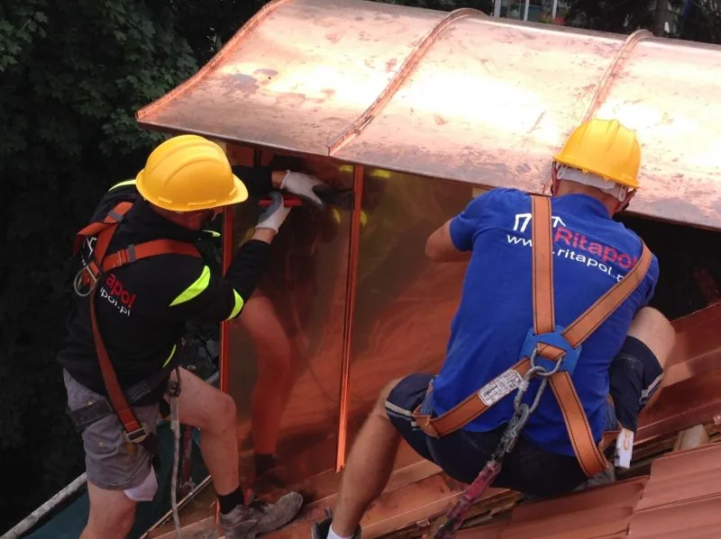
Dachy
Płaskie i skośne. Miedź, tytan-cynk, karpiówka.
Specjaliści w budownictwie · od 1990 r.
Dachy, tarasy, hydroizolacje, elewacje. Od domu po dworzec kolejowy.
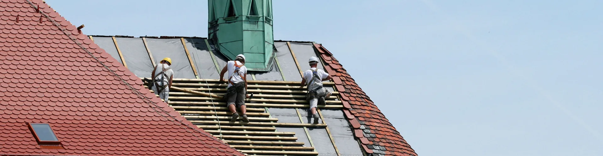
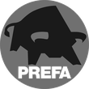
Realizacje
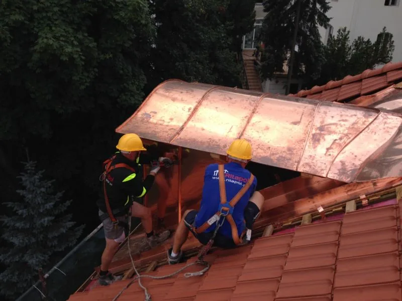
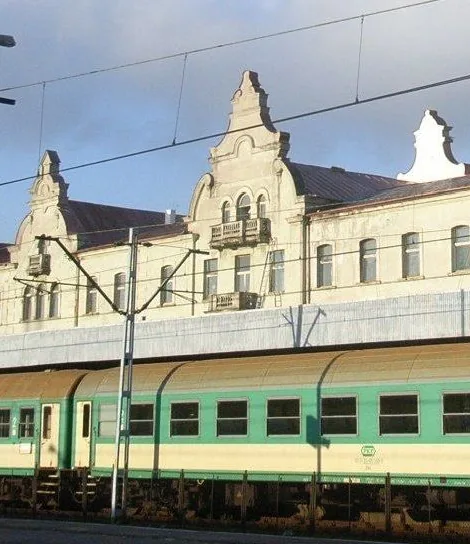
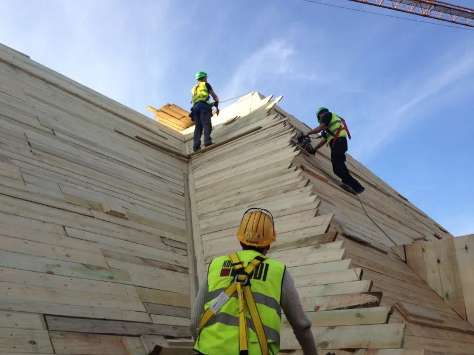
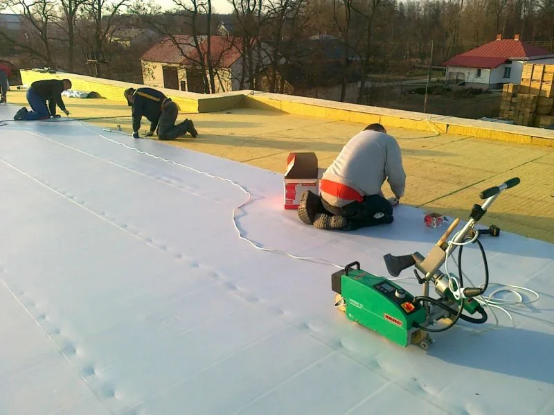
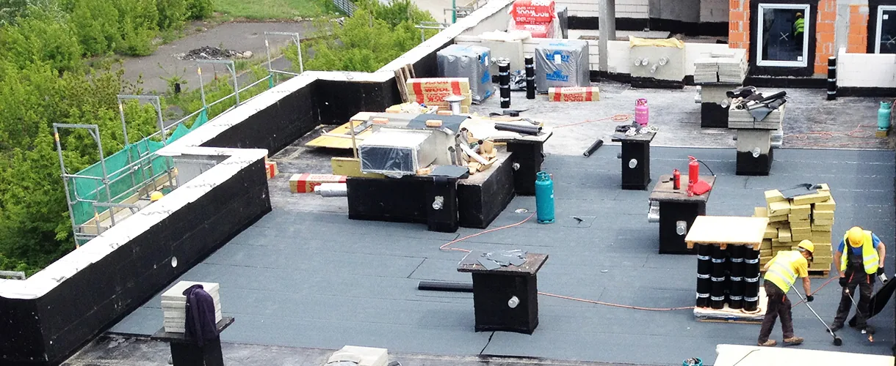
Masz budynek do zabezpieczenia?Zaczynamy od audytu dachu.
Nowość · Kreator dachu zielonego 3D
Mniej upału, mniej wody w kanalizacji, więcej życia. Przewiń i zobacz swój dach za rok.
Czarna papa. Latem nagrzewa się do 70°C.
Hydroizolacja, drenaż, filtr, substrat. Nic nie przecieknie.
Rozchodniki, taras do odpoczynku albo pełny ogród.
Woda zatrzymana na dachu, chłodniej pod dachem, cena.
Wspólnota albo biurowiec? Zadzwoń, sprawdzimy, czy dach udźwignie ogród.
Usługi

Płaskie i skośne. Miedź, tytan-cynk, karpiówka.
Ekstensywne, intensywne i tarasy na dachu.
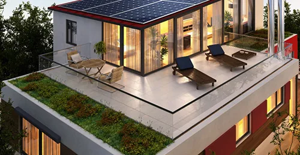
Hydroizolacja, gres, kamień, deska.
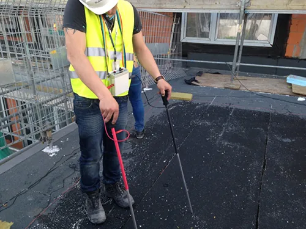
Metoda dymowa, elektryczna i wodna.
Cieknie dach albo taras?Badanie szczelności wskaże miejsce. Potem naprawa.
Specjalista: 600 242 109Jak działamy
Obmiary, zdjęcia, stan techniczny, wycena.
Prace dzielimy na etapy według pilności.
Własna ekipa, własny sprzęt, inżynier na budowie.
Także awaryjnie. I odśnieżanie zimą.
Krok pierwszy to audyt.Warszawa i cała Polska.
Opinie
„Tarasy na całym osiedlu w jednym sezonie. Mieszkańcy nie zgłosili ani jednego przecieku.”
„Miedź na zabytku zrobiona tak, że konserwator nie miał uwag.”
„Audyt dachu z planem na trzy lata. Wiemy, co naprawiać najpierw i ile to kosztuje.”
„Przeciek szukany od lat. Badanie dymowe znalazło go w godzinę.”
Sprawdzamy to w audycie. Lekki dach ekstensywny waży zwykle 80–150 kg/m² i pasuje do większości stropodachów.
Obmiary, dokumentację zdjęciową, opis stanu, zalecenia z pilnością i wycenę. Na tej podstawie planujemy remont etapami.
Metodą dymową, elektryczną lub wodną. Bez zrywania warstw, a po badaniu oddajemy dokumentację z miejscem nieszczelności.
Tak. Miedź i tytan-cynk na rąbek stojący, karpiówka, renowacja elewacji. Między innymi dworzec w Łodzi i pałac w Kobylinie.
Tak. Dachy, tarasy, balkony i elewacje na osiedlach, z planem prac dopasowanym do budżetu wspólnoty.
Siedziba w Warszawie. Większe inwestycje realizujemy w całej Polsce.
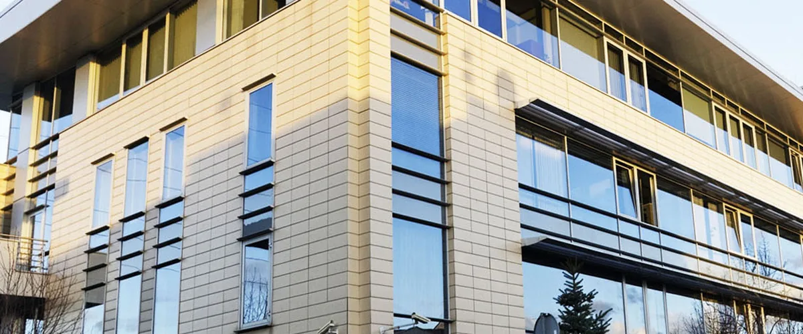
Audyt dachu z wyceną
Biuro: +48 22 354 67 74 · biuro@ritapol.pl